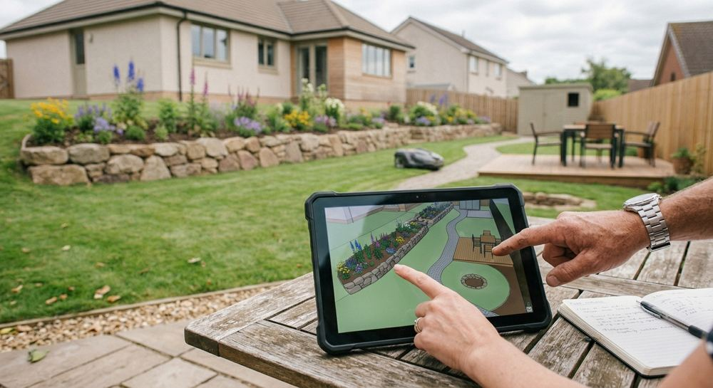

Création de jardins
Pelouses, massifs et plantations pour un espace extérieur qui vous ressemble.
Paysagiste · Évry-Courcouronnes (91)
ATOUT VERT IDF crée et aménage terrasses, allées, massifs et espaces verts à Évry-Courcouronnes et dans ses environs.

Aménagement paysager
Pelouses, massifs et plantations pour un espace extérieur qui vous ressemble.

Terrasses en bois, allées dallées ou pavées pour circuler et vivre dehors.

Murets, marches et soutènements en pierre pour structurer un terrain.

Un suivi régulier pour garder pelouses et massifs soignés.

À propos
ATOUT VERT IDF est une société d'aménagement paysager dirigée par Laurence Lelièvre. Elle est basée à Évry-Courcouronnes et intervient autour de la ville.
Votre projet
Vous décrivez votre terrain et vos envies par téléphone.
Le projet est cadré avec vous avant le début des travaux.
Terrasses, allées, murets et plantations prennent forme sur place.
Le jardin reste soigné grâce à un suivi régulier si vous le souhaitez.
Contact
Appelez directement ATOUT VERT IDF pour présenter votre projet à Évry-Courcouronnes ou aux alentours.